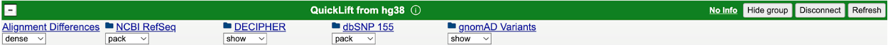
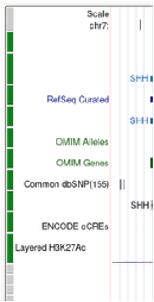
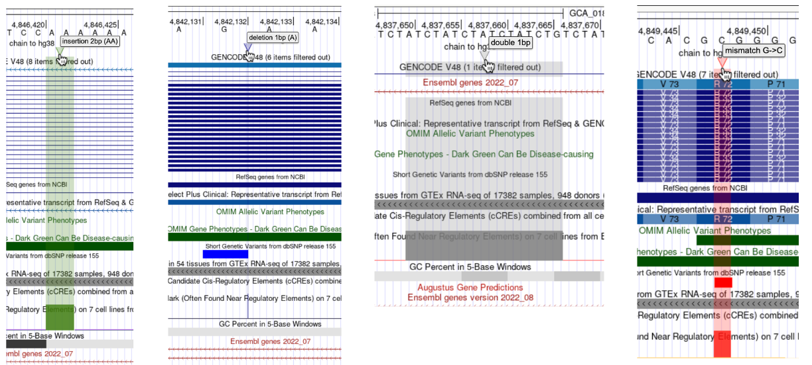

An alignment between two DNA sequences maps every nucleotide in one sequence to a nucleotide in
another sequence. By making and using
whole-genome alignments,
the UCSC Genome Browser always allowed users to "lift" genome annotations to another
assembly (liftOver), in bulk, one track at a
time. QuickLift is a tool that uses the same algorithm, but it maps
(liftOver) annotations on demand, in real-time, for all visible tracks. Only the
annotations in the currently visible region are lifted, so this is usually fast enough when
browsing a genome. For example, QuickLift can be used to map
annotations from hg38 or hg19 to any of the hundreds of new human high-quality genomes in GenArk
(HPRC), with almost no additional delay. For instance, you can view GENCODE genes from hg38
on a T2T assembly like hs1, carrying over your visible tracks to the target genome assembly.
QuickLift functionality depends on the availability of alignment files
(chains) that describe how sequences in one assembly correspond to another. The alignment files are
currently made at UCSC, and if no alignment file is available for the assembly in which you're
interested, please send a request to the genome mailing list, and we will attempt to provide you with one.
Getting Started
The source assembly is the assembly where the annotations come from, and the
destination (target) assembly is the assembly you are converting to.
To use QuickLift, follow these steps:
Navigate to the genome assembly and position you want to convert in the
Genome Browser. Make sure the
tracks you want to lift are visible.
Open the Convert page by going to View > In Other Genomes (Convert)
from the top menu bar, or navigate directly to
the Convert page.
Under Destination, choose the target genome assembly. You can either:
Use the Search bar to find a target genome by name. As you type,
an autocomplete dropdown appears with matching genomes. The search
automatically filters results to show only assemblies that have a liftOver
chain available from your source assembly. Genomes without an available
liftOver chain are excluded from the results. You can also click the
dropdown toggle button to browse recent and popular genomes.
Use the Assembly dropdown to select from other assemblies
of the same organism (e.g., other human assemblies when the source assembly is
hg38). To convert to a different organism, use the Search bar
instead.
Check the QuickLift tracks checkbox to carry over your visible tracks,
custom tracks, and track hubs to the target assembly. Without this checkbox, only the
coordinate position is converted.
When a single track from a container track, such as a superTrack or
composite, is lifted, the entire container track is carried over to the
target genome assembly.

Click Submit. The results page will show the corresponding position(s)
in the target assembly with links to the Genome Browser. If
QuickLift was enabled, clicking a link will display your
lifted tracks under a green
"QuickLift from ..." group in the target
assembly. To remove QuickLift tracks, click the
button.
Visual Indicators
QuickLift tracks have a green left-side button bar in the Browser
graphic (instead of the usual gray):

The Alignment Differences track displays liftOver differences using triangles and lines:
Insertions: green
Deletions: blue
Double-sided insertions: gray (Both the source
and target assemblies contain unalignable sequence between two regions of aligned
sequence)
Mismatches: red
Mousing over a triangle displays the size base-pair (bp) difference and the type of alignment
difference.

Clicking a triangle provides the source and target assembly genome positions, DNA sequence
alignment, including the type of alignment difference with the bases within the currently
visible browser region.
Unsupported Track Formats
QuickLift does not support the following track formats:
WIG — bigWig
is supported; WIG tracks can be converted to bigWig using the
wigToBigWig
utility
BAM
CRAM
PSL — BED
is supported; PSL tracks can be converted to BED using the
pslToBed
utility
VCF
HIC
MAF
bigChain
Interact
narrowPeak / broadPeak —
bigBed
is supported; since narrowPeak and broadPeak are BED-based formats, they can be
converted to bigBed using the
bedToBigBed
utility
pgSnp
Resources & Support
LiftOver — convert
coordinates or annotation files in bulk between assemblies
Chain format —
description of the alignment chain files used by
QuickLift and liftOver
Contact us — request a new
liftOver chain or report issues via the genome mailing list